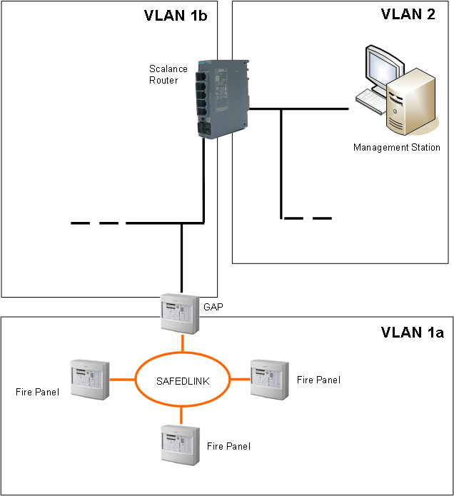

Scalance Router in FS20 Fire Networks
When the creation of routing tables with a set of static routes are not allowed for IT restrictions, you can use a Scalance router to grant connectivity to SAFEDLINK fire panels in a protected network segment.
The Scalance unit acts as a network separator and firewall.
The system settings depend very much on the network topology. As an example, we discuss here a typical topology.
This page provides general guidelines about the Scalance router configuration. For detailed instructions, see the application guide Scalance S615 Router for SAFEDLINK Fire Networks (A6V13357580).
The figure below shows a fire network with management station connectivity over a Scalance unit.
Note the three subnets:
- VLAN 1a: Internal fire panels subnet to the GAP station
- VLAN 1b: GAP subnet to the Scalance unit
- VLAN 2: Management Station subnet to the Scalance unit
Configuration Guidelines
In general, the configuration process includes the following steps:
- BACnet driver configuration in Desigo CC:
- Configure the Instance Number that matches a Client ID configured in the fire panels.
- Configure BBMD with a Broadcast Distribution Table (BDT) entry for VLAN 1 (GAP station).
- Network configuration in the fire panel tool:
- Configure a BDT entry for VLAN 2 (management station).
- Scalance unit configuration, to allow the BACnet traffic across the firewall:
- Configure VLAN 1 and VLAN 2 Layer3 Subnets.
- Enable the required Predefined IPv4 services for VLAN1 and VLAN 2 across the Firewall.
- Enable ICMP services across the firewall: Echo Reply (0), Echo Request (8) and Trace Route (30).
- Enable IP services across the firewall for UDP ports 47808 - 47823 for the management station.
NOTE: The fire panel tool requires ports 51000 - 51064. - Configure Firewall Rules to enable traffic from VLAN1a and VLAN 1b to VLAN2 and vice versa for all services.
NOTE: To reduce the number of rules and simplify configuration, define network addresses and subnet masks wisely to include both VLAN 1a and VLAN 1b in the IP range allowed by VLAN 2. - Configure the Layer 3 Static Route for the GAP to be identified as a gateway to the fire panels.
For detailed instructions about the Scalance S615 configuration, see the document Scalance S615 Router for SAFEDLINK Fire Networks (A6V13357580).
